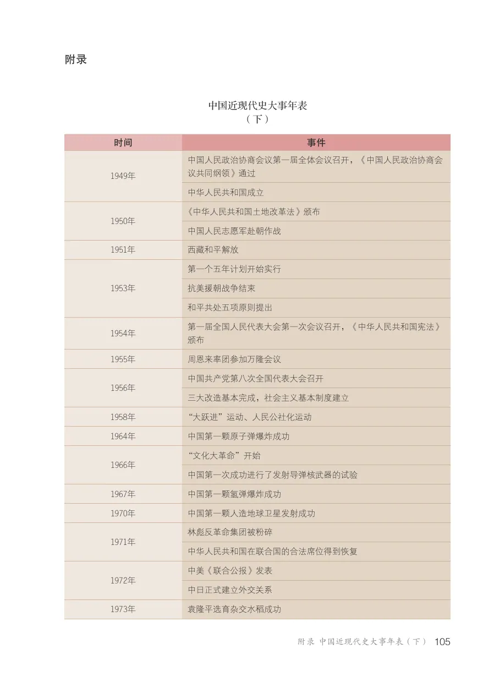
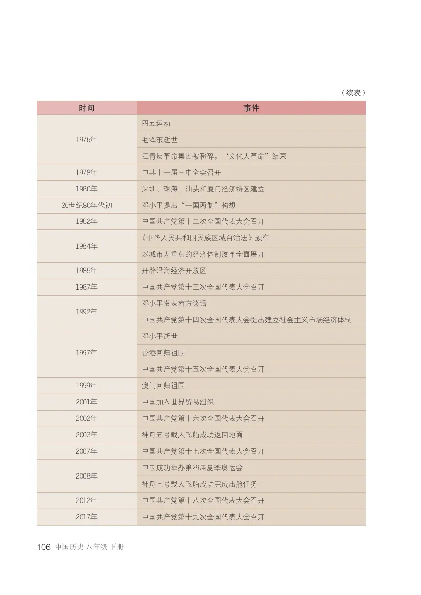
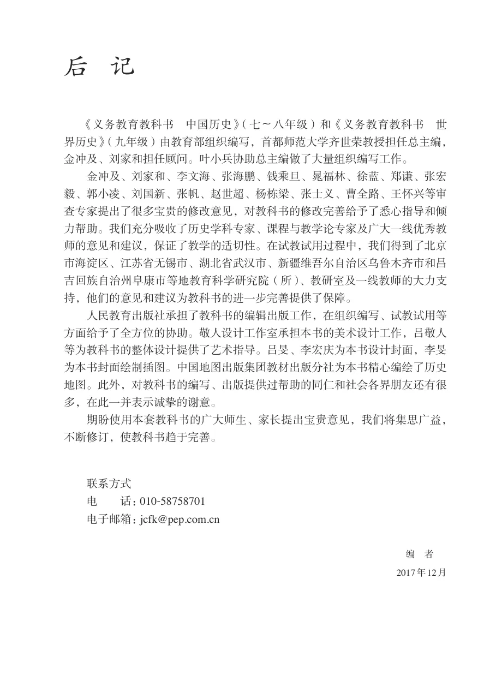

APPENDIX
中国近现代史大事年表（下）
教材第 105–106 页。为便于查阅，年表转录为可横向滚动的 HTML 表格；下方同时保留原书页面。
| 时间 | 事件 |
|---|---|
| 1949年 | 中国人民政治协商会议第一届全体会议召开，《中国人民政治协商会议共同纲领》通过；中华人民共和国成立 |
| 1950年 | 《中华人民共和国土地改革法》颁布；中国人民志愿军赴朝作战 |
| 1951年 | 西藏和平解放 |
| 1953年 | 第一个五年计划开始实行；抗美援朝战争结束；和平共处五项原则提出 |
| 1954年 | 第一届全国人民代表大会第一次会议召开，《中华人民共和国宪法》颁布 |
| 1955年 | 周恩来率团参加万隆会议 |
| 1956年 | 中国共产党第八次全国代表大会召开；三大改造基本完成，社会主义基本制度建立 |
| 1958年 | “大跃进”运动、人民公社化运动 |
| 1964年 | 中国第一颗原子弹爆炸成功 |
| 1966年 | “文化大革命”开始；中国第一次成功进行了发射导弹核武器的试验 |
| 1967年 | 中国第一颗氢弹爆炸成功 |
| 1970年 | 中国第一颗人造地球卫星发射成功 |
| 1971年 | 林彪反革命集团被粉碎；中华人民共和国在联合国的合法席位得到恢复 |
| 1972年 | 中美《联合公报》发表；中日正式建立外交关系 |
| 1973年 | 袁隆平选育杂交水稻成功 |
| 1976年 | 四五运动；毛泽东逝世；江青反革命集团被粉碎，“文化大革命”结束 |
| 1978年 | 中共十一届三中全会召开 |
| 1980年 | 深圳、珠海、汕头和厦门经济特区建立 |
| 20世纪80年代初 | 邓小平提出“一国两制”构想 |
| 1982年 | 中国共产党第十二次全国代表大会召开 |
| 1984年 | 《中华人民共和国民族区域自治法》颁布；以城市为重点的经济体制改革全面展开 |
| 1985年 | 开辟沿海经济开放区 |
| 1987年 | 中国共产党第十三次全国代表大会召开 |
| 1992年 | 邓小平发表南方谈话；中国共产党第十四次全国代表大会提出建立社会主义市场经济体制 |
| 1997年 | 邓小平逝世；香港回归祖国；中国共产党第十五次全国代表大会召开 |
| 1999年 | 澳门回归祖国 |
| 2001年 | 中国加入世界贸易组织 |
| 2002年 | 中国共产党第十六次全国代表大会召开 |
| 2003年 | 神舟五号载人飞船成功返回地面 |
| 2007年 | 中国共产党第十七次全国代表大会召开 |
| 2008年 | 中国成功举办第29届夏季奥运会；神舟七号载人飞船成功完成出舱任务 |
| 2012年 | 中国共产党第十八次全国代表大会召开 |
| 2017年 | 中国共产党第十九次全国代表大会召开 |
POSTSCRIPT
后记
《义务教育教科书 中国历史》（七～八年级）和《义务教育教科书 世 界历史》（九年级）由教育部组织编写，首都师范大学齐世荣教授担任总主编， 金冲及、刘家和担任顾问。叶小兵协助总主编做了大量组织编写工作。
金冲及、刘家和、李文海、张海鹏、钱乘旦、晁福林、徐蓝、郑谦、张宏 毅、郭小凌、刘国新、张帆、赵世超、杨栋梁、张士义、曹全路、王怀兴等审 查专家提出了很多宝贵的修改意见，对教科书的修改完善给予了悉心指导和倾 力帮助。我们充分吸收了历史学科专家、课程与教学论专家及广大一线优秀教 师的意见和建议，保证了教学的适切性。在试教试用过程中，我们得到了北京 市海淀区、江苏省无锡市、湖北省武汉市、新疆维吾尔自治区乌鲁木齐市和昌 吉回族自治州阜康市等地教育科学研究院（所）、教研室及一线教师的大力支 持，他们的意见和建议为教科书的进一步完善提供了保障。
人民教育出版社承担了教科书的编辑出版工作，在组织编写、试教试用等 方面给予了全方位的协助。敬人设计工作室承担本书的美术设计工作，吕敬人 等为教科书的整体设计提供了艺术指导。吕旻、李宏庆为本书设计封面，李旻 为本书封面绘制插图。中国地图出版集团教材出版分社为本书精心编绘了历史 地图。此外，对教科书的编写、出版提供过帮助的同仁和社会各界朋友还有很 多，在此一并表示诚挚的谢意。
期盼使用本套教科书的广大师生、家长提出宝贵意见，我们将集思广益， 不断修订，使教科书趋于完善。
联系方式 电 话：010-58758701 电子邮箱：jcfk@pep.com.cn 编 者 2017年12月 后 记
FRONT MATTER
书名页、版权与目录
SOURCE PAGES
附录原书页面


